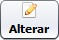

Como alterar o fundo de tela do sistema
Esta configuração é acessada pelo menu Ferramentas » Parâmetros do Sistema » aba Outras Opções.
Para iniciar a configuração, clique no botão .
Temos duas opções disponíveis para o Fundo de Tela:
Imagem Padrão
Esta opção mantém o fundo de tela com a imagem padrão do sistema.
É possível personalizar este fundo de tela, substituindo o arquivo BACKGROUND_SYSTEM.jpg localizado na Pasta de instalação do sistema » resources.
(Recomendável fazer uma cópia do arquivo original antes de substituí-lo)
Cor Sólida
Esta opção define uma cor sólida para ficar de fundo de tela.
Para definir a cor, clique no botão e escolha dentre as opções uma cor de sua preferência.
Após feita a configuração, clique no botão  .
.